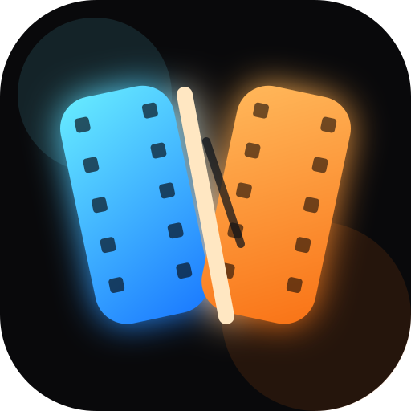

GlideBlend
Stitch AI-generated clips at the closest visual match and export a cleaner handoff.
Local FFmpeg
Windows App

Stitch AI-generated clips at the closest visual match and export a cleaner handoff.
